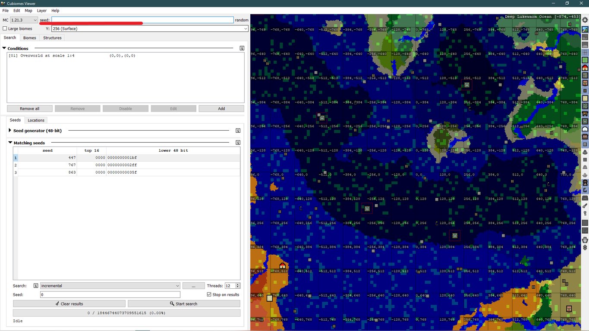

Гайд по Cubiomes Viewer


Cubiomes Viewer — це потужний інструмент для пошуку сідів у Minecraft Java Edition. Програма підтримує версії Minecraft до 1.21 і дозволяє: шукати біоми та структури за заданими умовами; візуалізувати карту світу з відображенням усіх біомів та структур; застосовувати складні фільтри для точного пошуку.
Натисни на зображення, щоб збільшити його.
Розділ 1: Встановлення
Для початку перейди на офіційну сторінку:

Далі завантаж файл "cubiomes-viewer-static-w64.exe" з останнього релізу. Після завантаження запусти застосунок. Готово!
*файл .exe для Windows.
*Система ймовірно скаже, що програма не перевірена і може бути небезпечною, проте не перемайся - все добре (не віриш? перевір тут), тож натисни "Детальніше" → "Все одно виконати".
Розділ 2: Перший запуск

Після запуску програми відкриється головне вікно Cubiomes Viewer. Зверху розміщені меню і поля: тут можна обрати версію гри (наприклад, 1.21.3 як на скріншоті), ввести зерно світу та налаштувати різні параметри (висоту відображення, масштаб карти, великі біоми тощо). Більшу частину вікна займає велика кольорова карта, яка показує біоми світу, зерно якого вказано вгорі зліва; праворуч від карти є купа маленьких перемикачів для відображення структур - якщо увімкнути, відповідні значки з’являться на карті. Перший перемикач зверху відповідає за показ сітки з координатами, наступні три - за вибір виміру (Overworld, Nether, End).
Трохи нижче зліва вкладки Search (пошук майже будь-чого за заданими параметрами), Biomes та Structures (пошук біомів і структур відповідно у заданому сіді / сідах).
Також є невеликий вибір мови програми. У меню зверху Edit → Edit Preferences можна обрати англійську, німецьку чи китайську. Поки без української (
Розділ 3: Перегляд відомого зерна
Почнемо з найпростішого - перегляду відомого зенра. Припустимо у тебе нема терпіння шукати міста Вардена, тож ти хочеш дізнатися де в твоєму світі вони є. Для цього перебуваючи в своєму світі напиши в чат команду /seed (креатив для цього не потрібен). Тобі покаже зерно, або ж сід, твого світу. Скопіюй його та встав осюди:
Ось і все. Ти бачиш стуктури та біоми свого світу. Поки що схоже на chunkbase, чи не так? Частково, але chunkbase не вміє шукати світи по заданих біомах чи структурах в певних координатах. І якраз про це наступні розділи.
Розділ 4: Пошук біомів та структур відомого зерна
Для цього завдання призначені вкладки Biomes та Structures (підкреслено червоним та зеленим відповідно на скріншоті нижче).
Особливої різниці між пошуком біомів та структур на цих вкладках нема. Що там, що там треба ввести координати першого кута (x1 z1) та другого кута (x2 z2) для пошуку в цьому прямокутному регіоні. Також є кнопка From visibl, яка автомачтино введе координати таким чином, щоб пошук відбувався лише на території, яку ти бачиш на карті зправа. Далі просто вибери потрібний біом та натисни кнопку Analyze знизу. *На вкладці пошуку структур не можна вибрати, яку саме структуру шукати, воно покаже всі, але ти можеш вимкнути їх відображення перемикачами на карті праворуч.
Розділ 5: Пошук пошук світів за критерієм: Біом
Щоб знайти світи з потрібними біомами, використовуй вкладку Search. У віконці Conditions натисни кнопку Add.
Потім вибери умову Biome, як на скріншоті нижче.

Наприклад, якщо потрібен вишневий ліс (Cherry Grove), обери Biome → Biome samples, нижче в меню обери сам біом серед списку (підкреслено червоним) та натисни OK. Меню в якому ти працював закриється, а в списку Conditions на вкладці Search з'явиться задана тобою умова (підкреслено зеленим). Далі натисни Start search у віконці Matching seeds (підкреслено синім).
Після цього в віконці Matching seeds з'явиться табличка з відповідними зернами генерації. На пошук може знадобитися час, іноді дуууже багато часу. Це залежить від умови яку ти поставиш. Якщо процес триває вже довгенько, подивить під кнопкою Start search, там пишеться приблизний час пошуку.
Розділ 6: Пошук пошук світів за критерієм: Структура
Загалом, те саме, що й з пошуком біомів, проте треба вибрати Structures.
Ще можна програтися з фільтрами розміщення цих структур. На скріншоті нижче я виставив пошук чотирьох селищ в радіусі сотні блоків на спавні, що настільки малоймовірно, що програма каже що пошук займе буквально роки (знизу, лівіше від центру напис "eta").
Отже, за допомогою параметра Instances within area можна обирати кількість структур в регіоні (в тому числі 0, щоб не було структур). Регіон можна вибрати за допомогою Within radial distance, тобто площа в радіусі заданої кількості блоків, або за допомогою Within centred square of side (щоб вибрати це, треба прибрати галочку з Within radial distance). Останній це пошук в квадраті з стороною заданої довжини починаючи з кута один (Custom: x1 z1) та до кута два (x2 z2). Також, якщо дуже треба, можна відсортувати типи селищ в списку нижче, проте й не забудь галочку Filter starting piece або Abandoned поставити.
Що ж, сподіваюся цей гайд був корисним! Він досить короткий та описує лише кілька функцій програми, які я вважаю найбільш корисними для звичайного гравця. Просунутим користувачам раджу самим полазити по програмі та розібратися. Удачі!